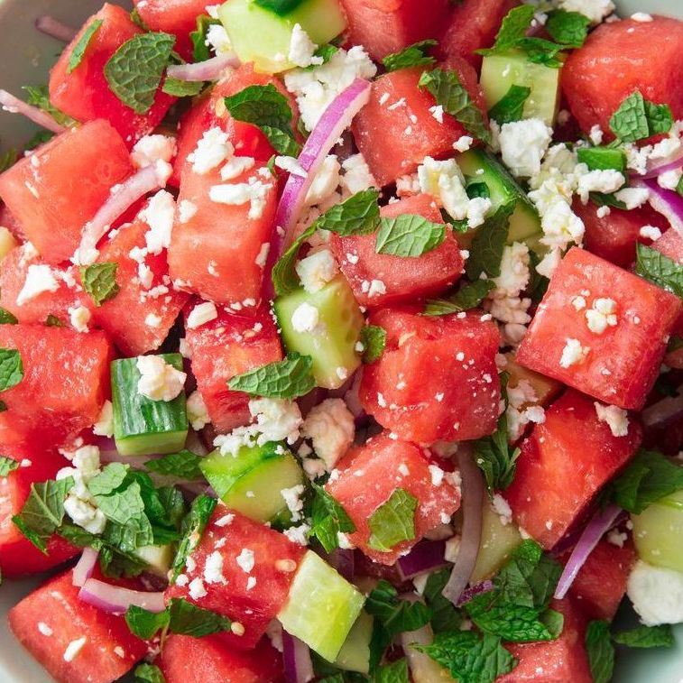

WATERMELON FETA SALAD

DESCRIPTION
Watermelon Salad - an unexpected concoction of watermelon, mint, feta cheese, and red onion. This watermelon salad is surprisingly perfect in every way, blending sweet and savory in one delicious bite!
INGREDIENTS
- 1/4 c. extra-virgin olive oil
- 2 tbsp. red wine vinegar
- 1/2 tsp. kosher salt
- 3 c. cubed seedless watermelon
- 1 c. medium cucumber, chopped
- 1 c. crumbled feta
- 1/2 c. red onion, thinly sliced
- 1/2 c. coarsely chopped mint, plus more for garish
STEPS:
- Step 1
In a small bowl, whisk together oil, vinegar, and salt.
-
Step 2
In a large serving bowl, combine watermelon, cucumber, feta, red onion, and mint. Add dressing and toss to coat.
-
Step 3
Garnish with more mint and flaky sea salt if desired.
« back to home